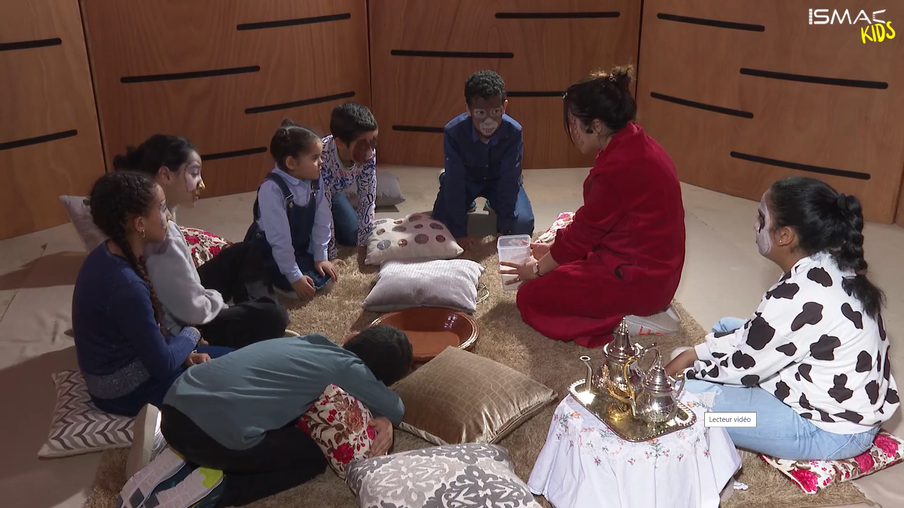
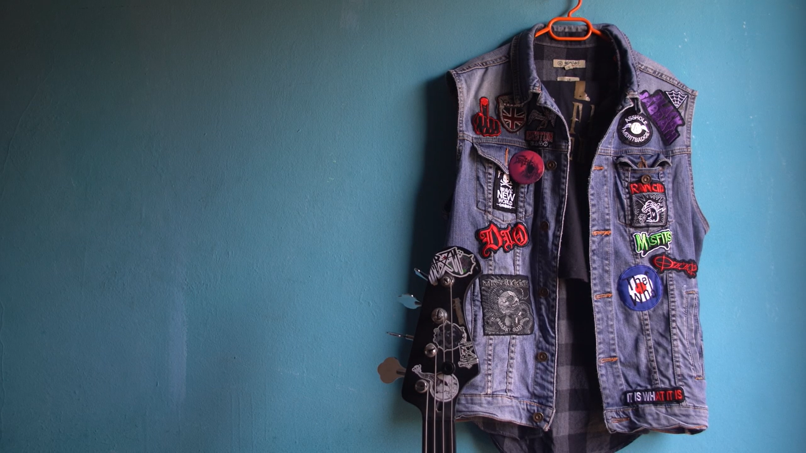

Hikaya stands as an educational children's TV show, curated with meticulous detail to engage young minds. Serving as the recording and mixing engineer for this program, I had the privilege of contributing to its production, ensuring that each narrative unfolds seamlessly, leaving a lasting impact by culminating in a valuable lesson for the audience. My commitment to audio excellence enhances the storytelling experience, making Hikaya not only entertaining but also a meaningful educational resource for children.

"Sunny Days Canvas invites viewers into the compelling journey of a gifted painter grappling with schizophrenia. As the recording and mixing engineer for this poignant film, I had the privilege of capturing the nuanced stages of his artistic evolution. From the vibrancy of his initial creations to the tumultuous brushstrokes reflecting the chaos of his diagnosis, the soundtrack mirrors the emotional depth of each scene.

Explore the short film 'Pull Yourself Together,' a poignant narrative centered around a young woman navigating the challenges of life, supported by a dedicated friend endeavoring to bring her solace. It is my distinct privilege to have served as both the recording and mixing engineer for this project, contributing to the seamless integration of audio elements. Through meticulous recording and precision in mixing.

Presenting the documentary 'Underground,' a compelling exploration of Yassin, an avid enthusiast of rock music and bands, delving into the intricacies of his unique lifestyle. I am honored to have played a pivotal role as the sound mixer for this project, meticulously crafting and blending the auditory elements to enhance the narrative. Through meticulous sound design, 'Underground' immerses audiences in Yassin's world, offering a professionally curated sonic experience that complements the thematic essence of the documentary.